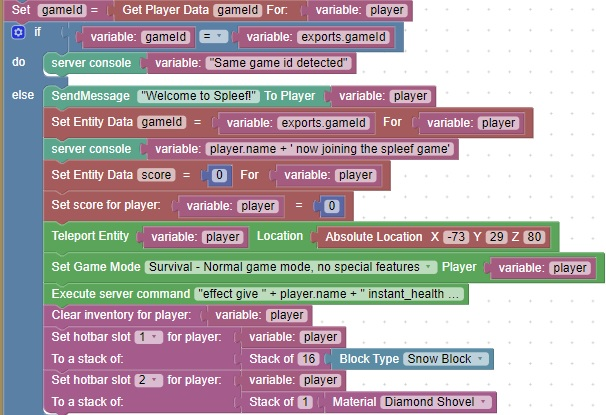

Detect if a player is joining this game for the first time
If a player disconnects and reconnects to the server, you may want to have them continue with the same settings they left with.
This code will determine if the player has been in this same game previously.
